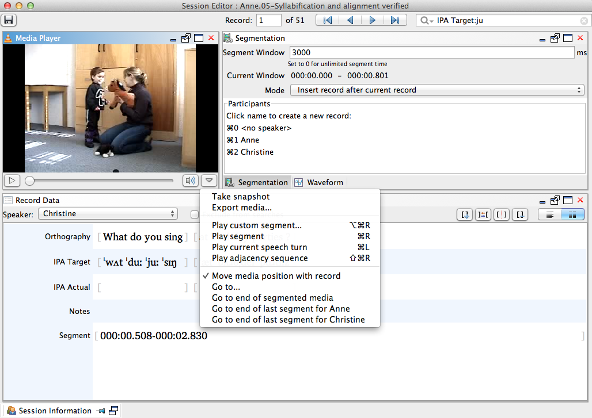

Segment Media
Segment media into records.
-
Click the Play button in the Media
Player.
This will begin playback of the media file.
-
From the Segmentation view, create a new segment by
clicking on the <no speaker> option or the appropriate
participant's name in the Participants field. Alternately
you may type CMD/CTRL+0 for an unspecified participant,
or CMD/CTRL+1, CMD/CTRL+2, etc.
for a particular participant as noted to the left of his/her name in the list.
When the default segment length is set to 3000 ms, your segment will end when you either click on the participants name or use the specified keystrokes. The segment will begin 3 seconds before that action. The media file will continue to play.Note: You may want to adjust the default segment length value depending on the nature of your study. Simply type in the desired segment length (in milliseconds) in the Segment Window field. A segment window of 0 will make the segment length unlimited; each segment will begin at the endpoint of the previous segment.Note: The Current Window values display the beginning and end time of your segment. The second value always represents the current playback time. The first value represents the beginning of your segment; when in blue this time also corresponds to the end of the previous segment. Clicking this value when it is blue causes the program to ignore the endpoint of the previous segment and change to a segment beginning point appropriate for the Segment Window value.
-
Repeat Step 2 after each utterance until the entire media file has been
segmented.
By default, this action generates a new record in the Session Editor for each segmented media clip and places the new record after the current one.Note: You may instead choose to insert the new record at the end of the session by selecting Insert record at end of session from the Mode combo box. You may also choose to overwrite the segment for an individual record, if for example you accidentally cut off the end of an utterance. To do so, select Replace segment for current record from the Mode combo box, and create a new segment with the desired endpoint following Step 2.Note: To resume segmentation from a certain time, click the arrow at the bottom right of the Media Player. This will open a context menu with several options. Go to... allows you to input a specific time for the player to jump to, Go to end of segmented media brings you to the end of your last segment, and Go to end of last segment for <Participant> brings you to the end of the last segmented utterance by the specified participant.
